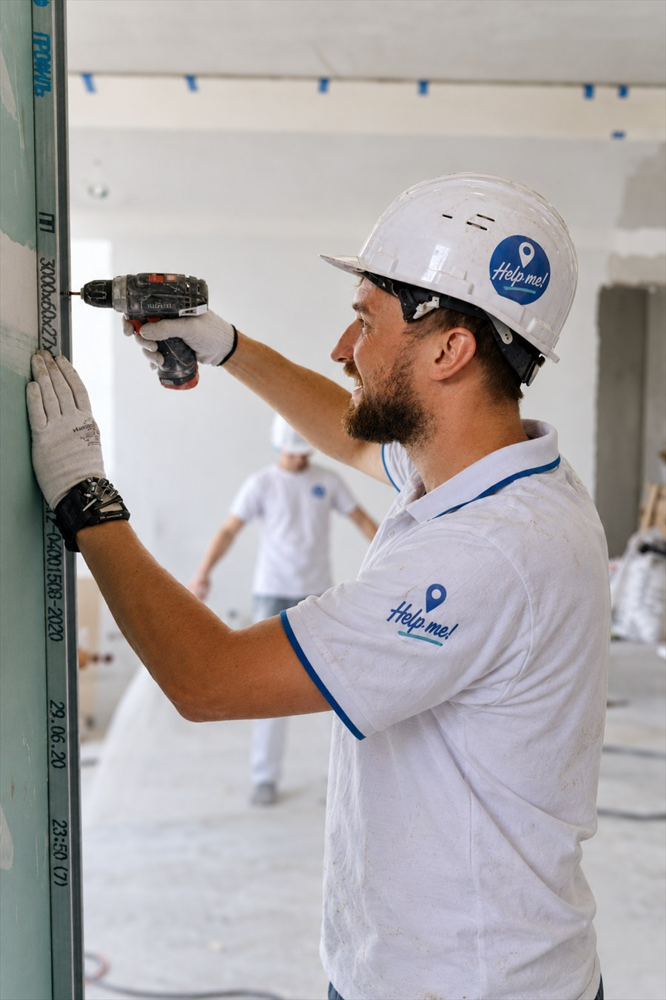
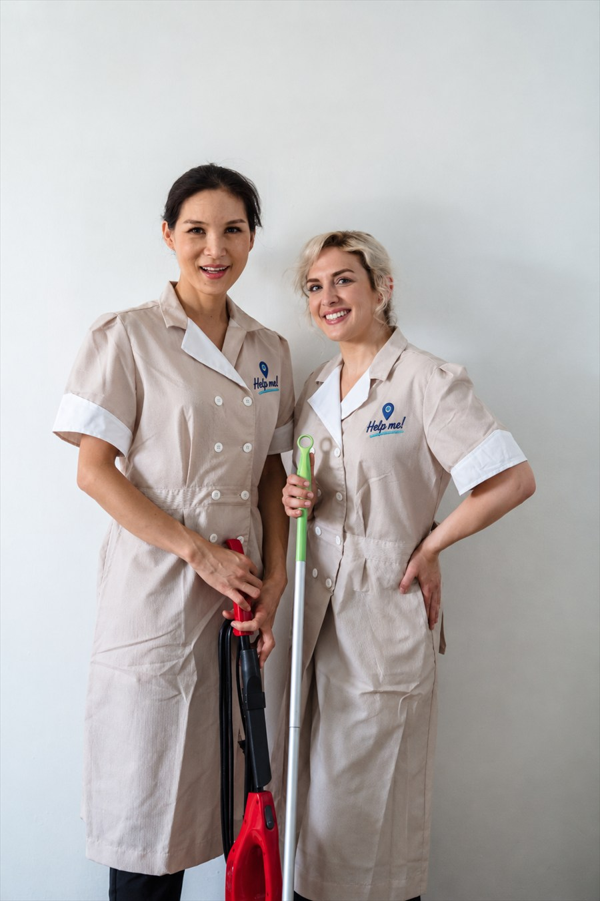
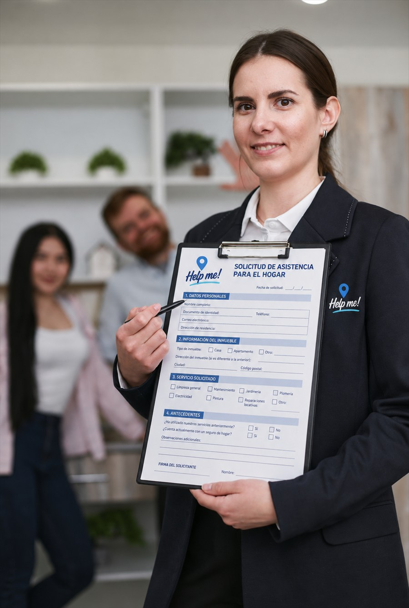

Remodelaciones y Construcción

Servicios de construcción y remodelación para diferentes espacios, incluyendo viviendas, oficinas y locales comerciales, piscinas, jardines y más.
HELP ME · SERVICIOS PROFESIONALES PARA TI
Conoce nuestros servicios de construcción, remodelaciones, mudanzas, limpieza, gestiones, marketing y publicidad y mucho más.
Qué hacemos
Descubre algunas de las áreas en las que podemos ayudarte a encontrar soluciones profesionales para tus necesidades.

Servicios de construcción y remodelación para diferentes espacios, incluyendo viviendas, oficinas y locales comerciales, piscinas, jardines y más.
Servicios de mudanzas y transporte de materiales, muebles y otros objetos, a cualquier lugar de Tenerife con seguridad y eficiencia.

Soluciones de limpieza adaptadas a tus necesidades, incluyendo limpieza de hogares, oficinas, locales comerciales y más. Contamos con personal capacitado y productos de limpieza de alta calidad para garantizar resultados excepcionales.
Información y orientación sobre los trámites y gestiones necesarios para realizar diferentes procesos, incluyendo la obtención de licencias, permisos y regularización de documentos.
Servicios de marketing y publicidad para ayudar a las empresas a promocionar sus productos y servicios, incluyendo estrategias de marketing digital, diseño gráfico y campañas publicitarias.

Consulta información sobre los servicios de seguros disponibles, incluyendo seguros de salud, seguros de vida, seguros de hogar, vehículos y más.
Consulta con el equipo de Help Me la disponibilidad y el alcance de cada servicio.